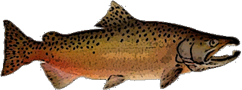

Fish & Fishing
Chinook Salmon
Least Concern
Threatened
Endangered
Historical Habitat
Current population status and historical distribution of Chinook Salmon
Fall Run
Spring Run
Most chinook spawn in large rivers such as the Columbia and Snake, although they will also use smaller streams with sufficient water flow. They tend to spawn in the mainstem of streams, where the water flow is high. Because of their size they are able to spawn in larger gravel than most other salmon. Chinook spawn on both sides of the Cascade Range, and some fish travel hundreds of miles upstream before they reach their spawning grounds. Because of the distance, these fish enter streams early and comprise the spring and summer runs. Fall runs spawn closer to the ocean and more often use small coastal streams. All chinook reach their spawning grounds by fall, in time to spawn.
Chinook fry rear in freshwater from three months to a year, depending on the race of chinook and the location. Spring chinook tend to stay in streams for a year; fish in northern areas, where the streams are less productive and growth is slower, also tend to stay longer. Rearing chinook fry use mainstems and their tributaries.